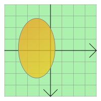
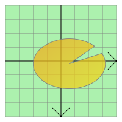

QGraphicsEllipseItem Class
The QGraphicsEllipseItem class provides an ellipse item that you can add to a QGraphicsScene. More...
| Header: | #include <QGraphicsEllipseItem> |
| qmake: | QT += widgets |
| Since: | Qt 4.2 |
| Inherits: | QAbstractGraphicsShapeItem |
This class was introduced in Qt 4.2.
Public Types
| enum | anonymous { Type } |
Public Functions
| QGraphicsEllipseItem(qreal x, qreal y, qreal width, qreal height, QGraphicsItem *parent = nullptr) | |
| QGraphicsEllipseItem(const QRectF &rect, QGraphicsItem *parent = nullptr) | |
| QGraphicsEllipseItem(QGraphicsItem *parent = nullptr) | |
| virtual | ~QGraphicsEllipseItem() |
| QRectF | rect() const |
| void | setRect(const QRectF &rect) |
| void | setRect(qreal x, qreal y, qreal width, qreal height) |
| void | setSpanAngle(int angle) |
| void | setStartAngle(int angle) |
| int | spanAngle() const |
| int | startAngle() const |
Reimplemented Public Functions
| virtual QRectF | boundingRect() const override |
| virtual bool | contains(const QPointF &point) const override |
| virtual bool | isObscuredBy(const QGraphicsItem *item) const override |
| virtual QPainterPath | opaqueArea() const override |
| virtual void | paint(QPainter *painter, const QStyleOptionGraphicsItem *option, QWidget *widget = nullptr) override |
| virtual QPainterPath | shape() const override |
| virtual int | type() const override |
Detailed Description
QGraphicsEllipseItem respresents an ellipse with a fill and an outline, and you can also use it for ellipse segments (see startAngle(), spanAngle()).
 |  |
To set the item's ellipse, pass a QRectF to QGraphicsEllipseItem's constructor, or call setRect(). The rect() function returns the current ellipse geometry.
QGraphicsEllipseItem uses the rect and the pen width to provide a reasonable implementation of boundingRect(), shape(), and contains(). The paint() function draws the ellipse using the item's associated pen and brush, which you can set by calling setPen() and setBrush().
See also QGraphicsPathItem, QGraphicsRectItem, QGraphicsPolygonItem, QGraphicsTextItem, QGraphicsLineItem, QGraphicsPixmapItem, and Graphics View Framework.
Member Type Documentation
enum QGraphicsEllipseItem::anonymous
The value returned by the virtual type() function.
| Constant | Value | Description |
|---|---|---|
QGraphicsEllipseItem::Type | 4 | A graphics ellipse item |
Member Function Documentation
void QGraphicsEllipseItem::setRect(qreal x, qreal y, qreal width, qreal height)
Sets the item's rectangle to the rectangle defined by (x, y) and the given width and height.
This convenience function is equivalent to calling setRect(QRectF(x, y, width, height))
See also rect().
QGraphicsEllipseItem::QGraphicsEllipseItem(qreal x, qreal y, qreal width, qreal height, QGraphicsItem *parent = nullptr)
Constructs a QGraphicsEllipseItem using the rectangle defined by (x, y) and the given width and height, as the default rectangle. parent is passed to QAbstractGraphicsShapeItem's constructor.
This function was introduced in Qt 4.3.
See also QGraphicsScene::addItem().
QGraphicsEllipseItem::QGraphicsEllipseItem(const QRectF &rect, QGraphicsItem *parent = nullptr)
Constructs a QGraphicsEllipseItem using rect as the default rectangle. parent is passed to QAbstractGraphicsShapeItem's constructor.
See also QGraphicsScene::addItem().
QGraphicsEllipseItem::QGraphicsEllipseItem(QGraphicsItem *parent = nullptr)
Constructs a QGraphicsEllipseItem. parent is passed to QAbstractGraphicsShapeItem's constructor.
See also QGraphicsScene::addItem().
[virtual] QGraphicsEllipseItem::~QGraphicsEllipseItem()
Destroys the QGraphicsEllipseItem.
[override virtual] QRectF QGraphicsEllipseItem::boundingRect() const
Reimplements: QGraphicsItem::boundingRect() const.
[override virtual] bool QGraphicsEllipseItem::contains(const QPointF &point) const
Reimplements: QGraphicsItem::contains(const QPointF &point) const.
[override virtual] bool QGraphicsEllipseItem::isObscuredBy(const QGraphicsItem *item) const
Reimplements: QAbstractGraphicsShapeItem::isObscuredBy(const QGraphicsItem *item) const.
[override virtual] QPainterPath QGraphicsEllipseItem::opaqueArea() const
Reimplements: QAbstractGraphicsShapeItem::opaqueArea() const.
[override virtual] void QGraphicsEllipseItem::paint(QPainter *painter, const QStyleOptionGraphicsItem *option, QWidget *widget = nullptr)
Reimplements: QGraphicsItem::paint(QPainter *painter, const QStyleOptionGraphicsItem *option, QWidget *widget).
QRectF QGraphicsEllipseItem::rect() const
Returns the item's ellipse geometry as a QRectF.
See also setRect() and QPainter::drawEllipse().
void QGraphicsEllipseItem::setRect(const QRectF &rect)
Sets the item's ellipse geometry to rect. The rectangle's left edge defines the left edge of the ellipse, and the rectangle's top edge describes the top of the ellipse. The height and width of the rectangle describe the height and width of the ellipse.
See also rect() and QPainter::drawEllipse().
void QGraphicsEllipseItem::setSpanAngle(int angle)
Sets the span angle for an ellipse segment to angle, which is in 16ths of a degree. This angle is used together with startAngle() to represent an ellipse segment (a pie). By default, the span angle is 5760 (360 * 16, a full ellipse).
See also spanAngle(), setStartAngle(), and QPainter::drawPie().
void QGraphicsEllipseItem::setStartAngle(int angle)
Sets the start angle for an ellipse segment to angle, which is in 16ths of a degree. This angle is used together with spanAngle() for representing an ellipse segment (a pie). By default, the start angle is 0.
See also startAngle(), setSpanAngle(), and QPainter::drawPie().
[override virtual] QPainterPath QGraphicsEllipseItem::shape() const
Reimplements: QGraphicsItem::shape() const.
int QGraphicsEllipseItem::spanAngle() const
Returns the span angle of an ellipse segment in 16ths of a degree. This angle is used together with startAngle() for representing an ellipse segment (a pie). By default, this function returns 5760 (360 * 16, a full ellipse).
See also setSpanAngle() and startAngle().
int QGraphicsEllipseItem::startAngle() const
Returns the start angle for an ellipse segment in 16ths of a degree. This angle is used together with spanAngle() for representing an ellipse segment (a pie). By default, the start angle is 0.
See also setStartAngle() and spanAngle().
[override virtual] int QGraphicsEllipseItem::type() const
Reimplements: QGraphicsItem::type() const.